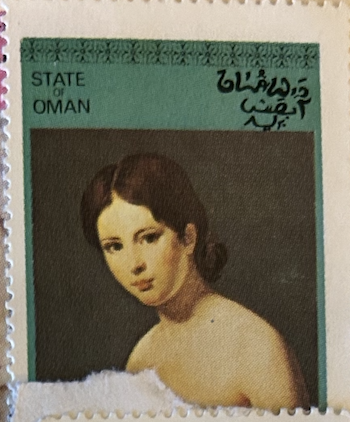
| SOURCE | TITLE| IMAGE MATCH | click to source page |
| eBay | Arabic Magazine, May 1959 Hilal-Mai, Flora the Goddess of Beauty Vol 67 Al-Hilal | eBay | 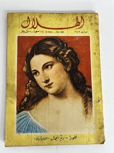 |
| Colnect | 6 stamps, including: Yemen, Kingdom: The Lady with the Veil by Raphael (1483-1520), 1968 : US$ 1.49 from Eivind-Friedricksen : Stamps Marketplace : Stamps for sale : Colnect | 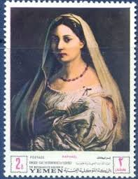 |
| AbeBooks | Poems of Widowhood : A Bilingual Edition of the 1538 Rime by Colonna, Vittoria; Targoff, Ramie (EDT); Tower, Troy (EDT): As New (2021) | GreatBookPrices | 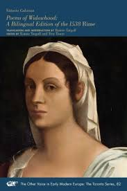 |
| eBay | Die Grossen Franzosischen Maler by Karl Scheffler (Art Book Germany) | eBay | 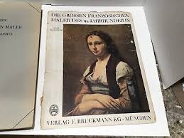 |
| Amazon.com | Dona Perfecta (Dodo Press): Work from the late 19th Century Spanish novelist, considered by some as the greatest Spanish realist novelist.: Galdos, B. Perez, Serrano, Mary J.: 9781406517149: Amazon.com: Books | 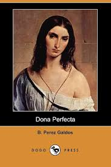 |
| eBay | Postcard Jean-Baptiste-Camille Corot Woman with Pearl Louvre Paris Unused | eBay | 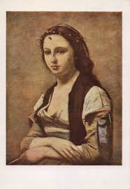 |
| Etsy | Braun and Cie Paris - Etsy | 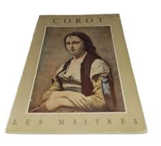 |
| Allposters | The Woman with the Pearl (La Femme a La Perle) - Jean-Baptiste-Camille Corot | AllPosters.com | 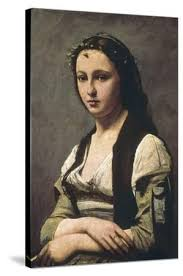 |
| Art.com | The Woman with the Pearl (La Femme a La Perle) Art Print - Jean-Baptiste-Camille Corot | Art.com | 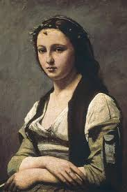 |
| Amazon.com | Amazon.com: آلام فرتر (Arabic Edition) eBook : يوهان غوته, أحمد رياض: Kindle Store | |
| Walmart | Drei Erzählungen : Ein schlichtes Herz / Die Legende von Sankt Julian dem Gastfreien / Herodias (Paperback) - Walmart.com | 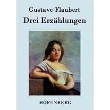 |
| Everett On Demand | Corot, Jean-baptiste Camille 1796-1875 #6 Metal Print by Everett - Everett On Demand | 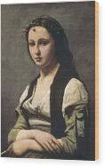 |
| vishalzala.com | TITIAN Italian, Flora Original Vintage Fine Art Print 1930's Printed Antique USA | |
| eBay | Christie's NY 11/06/2001 Property of René Gaffé #N09854 | eBay | 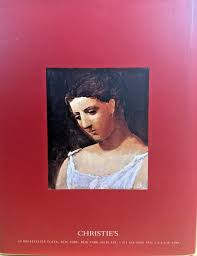 |
| ShopiPersia | On Tangled Paths Book by Theodor Fontane (Farsi) - ShopiPersia | 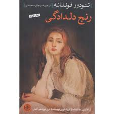 |
| eBay UK | Marilyn Monroe Drawing on Cover of Egyptian Arabic Magazine Akher Sa'a 1950 #796 | eBay UK | 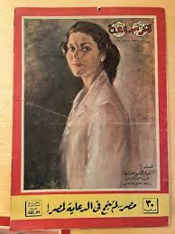 |
| Amazon.com | Amazon.com: Pinturas de fama mundial "La mujer con una perla", reproducción de pintura al óleo, impresión en lienzo giclée, impresiones artísticas retro para pared en casa, oficina, decoración de pared, 23.6 x : | 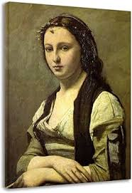 |
| Goodreads | Sara⋆ฺ࿐'s Reading Progress for جین ایر - Jan 27, 2026 02:02AM | 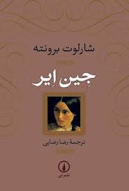 |
| Amazon UK | From Plotzk to Boston eBook : Unknown: Amazon.co.uk: Kindle Store | 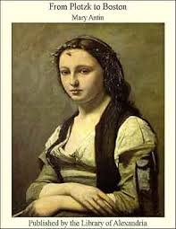 |
| Etsy | JANE AUSTEN - Emma - Barnes & Noble Classics Paperback Edition - Etsy | 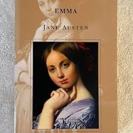 |
| Victory Baptist Press | Verses of Virtue: The Poetry and Prose of Christian Womanhood | Victory Baptist Press | 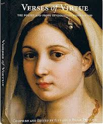 |
| Profile News | The Sister declared her coup !! - Arabic newspaper -Profile News | |
| مكتبة نور | download book rachel s daisies pdf - Noor Library | 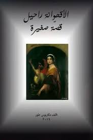 |
| eBay | 1961 Arabic Al Hilal Album 6 Magazine مجلد مجلة الهلال - نصف سنة | eBay | 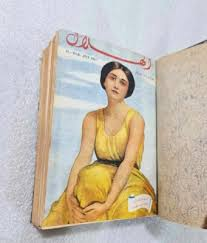 |
| همسر جاویدان 🔥🔥🔥🔥فروخته شد🔥🔥🔥🔥 ایروینگ استون ترجمه مشفق همدانی ناشر انتشارات پیروز سال چاپ ۱۳۴۴ کیفیت بسیار خوب | 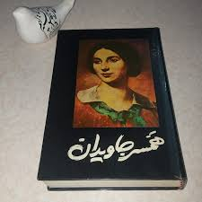 | |
| Goodreads | Women's Writing in Italy, 1400–1650 by Virginia Cox | Goodreads | 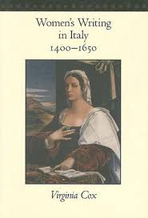 |
| AbeBooks | Clara Raphael by Mathilde Fibiger - AbeBooks | 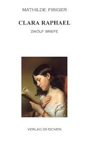 |
| مكتبة النخلة العالمية | الأدب الفارسي 368 سلسلة عالم المعرفة محمد رضا شفيعي كدكني - مكتبة النخلة العالمية | 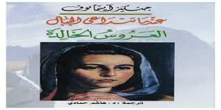 |
| Kobo | Robert Elsmere eBook by Mary Augusta Ward - EPUB | Rakuten Kobo India | 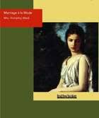 |
| Weller Book Works | Results for "Deledda, Grazia" | Weller Book Works | 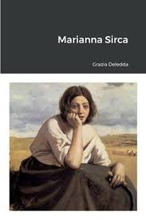 |
| Fine Art America | Jean-Baptiste-Camille Corot French, 1796-1875, Woman with a Pearl ca. 1858-68 Painting by Jean-Baptiste-Camille Corot - Fine Art America | 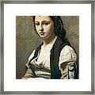 |
| Amar Bail Novel By Umera Ahmed Pdf | ||
| eBay | Vintage Egyptian Al-Hilal Arabic Magazine Original Lot 3 1960 مجلة الهلال القصص | eBay | 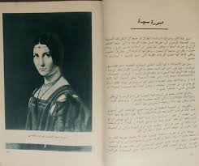 |
| Amazon.com | Caught in the Net (Dodo Press): Work Form 19Th Century French Author Considered A Pioneer Of Modern Detective Fiction.: Gaboriau, Emile: 9781406517026: Amazon.com: Books | 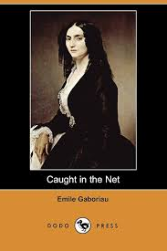 |
| eBay | SS Leonardo Da Vinci menu La Donna Raphael Oct. 10th, 1975 West Indies Cruise | eBay | |
| AbeBooks | INGRES by WILDENSTEIN GEORGES: bon Couverture rigide | Le-Livre | 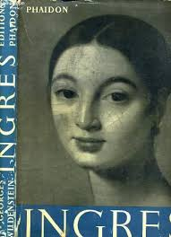 |
| Goodreads | Books by Luigi Capuana (Author of Il marchese di Roccaverdina) | 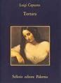 |
| Fine Art America | Jean-Baptiste-Camille Corot French, 1796-1875, Woman with a Pearl ca. 1858-68 Wood Print by Jean-Baptiste-Camille Corot - Fine Art America | 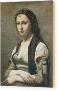 |
| Amazon.com | Thyrza: Gissing, George: 9781981422593: Amazon.com: Books | 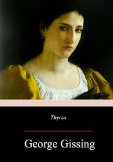 |
| Amazon.in | Buy Susy: A Story of the Plains Book Online at Low Prices in India | Susy: A Story of the Plains Reviews & Ratings - Amazon.in | 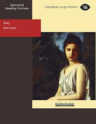 |
| Amazon.com | Persuasion (Centaur Classics) [The 100 greatest novels of all time - #100] - Kindle edition by Austen, Jane. Literature & Fiction Kindle eBooks @ Amazon.com. | |
| eBay | My Book Series Issue 34 Arabic Books Helmy Murad 1955 كتابى - أقنعة الحب السبعة | eBay | 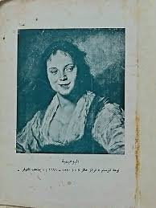 |
| Amazon.com | Die Hörigkeit der Frau (German Edition): 9783743715233: Mill, John Stuart, Mill, Harriet Taylor: Books - Amazon.com | 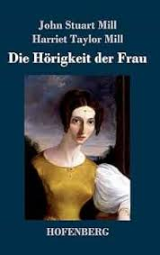 |
| Amazon.com | El arte del Renacimiento (Spanish Edition): 9788446000327: Jestaz, Bertrand: Libros - Amazon.com | 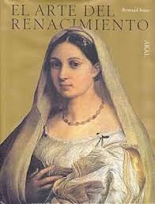 |
| Anarchism and Other Essays - Emma Goldman - Google Books | 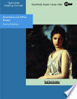 | |
| Amazon.com | Amazon.com: Little Dorrit. Klein Dorrit. Gesamtausgabe: Roman. nexx classics – WELTLITERATUR NEU INSPIRIERT (German Edition) eBook : Dickens, Charles: Books | |
| Amazon.com | Amazon.com: Die Hörigkeit der Frau (Großdruck) (German Edition): 9783847845645: Mill, John Stuart, Mill, Harriet Taylor: Libros | |
| Amazon.in | Buy A Shabby Genteel Story: Easyread Super Large 18pt Edition Book Online at Low Prices in India | A Shabby Genteel Story: Easyread Super Large 18pt Edition Reviews & Ratings - Amazon.in | 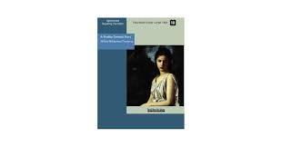 |